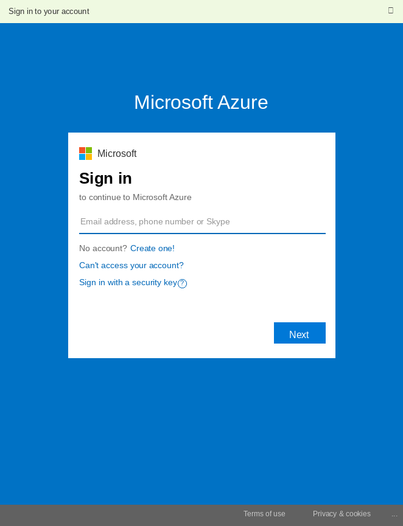
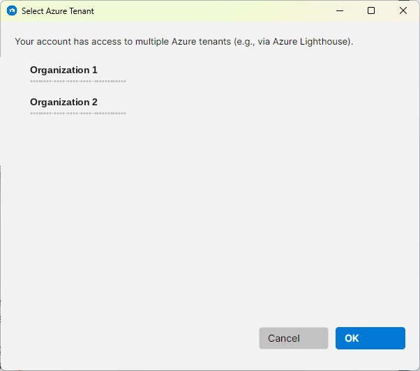
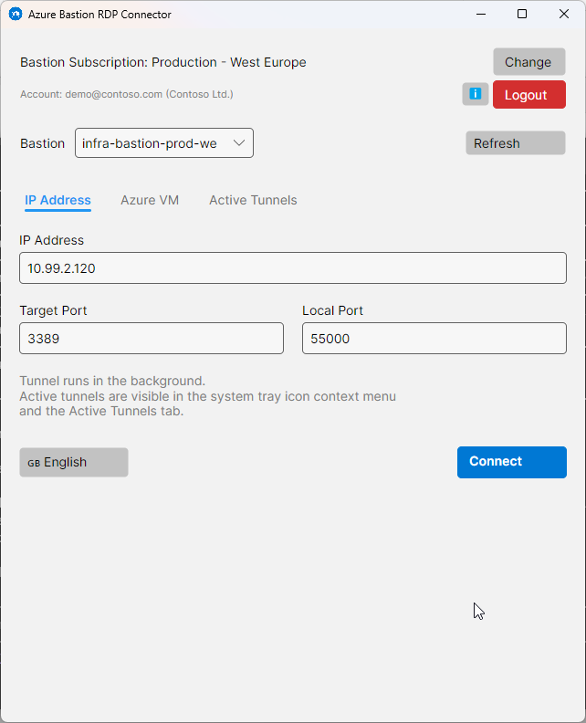
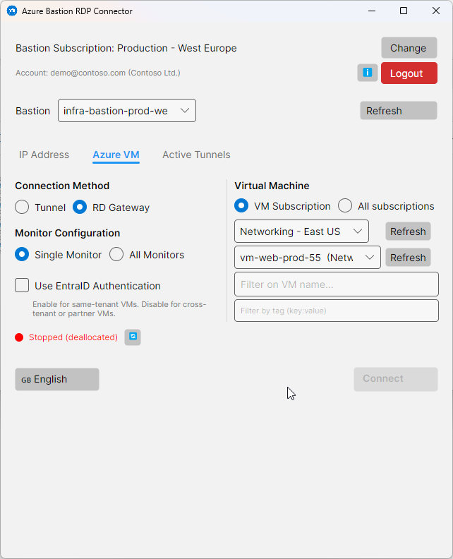
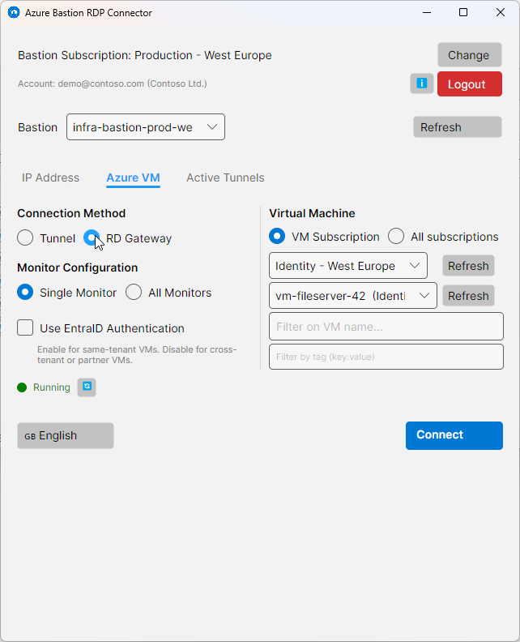
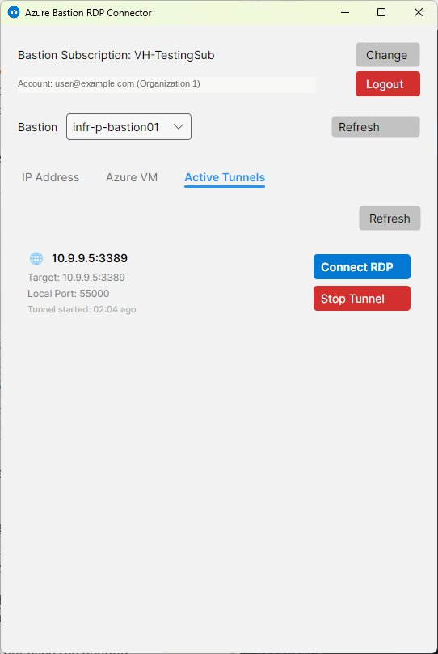

Azure Bastion RDP Connector
Conéctese de forma segura a VM de Azure y direcciones IP a través de Azure Bastion con el cliente RDP nativo de Windows.
🗺️ Descripción general
Azure Bastion RDP Connector es una aplicación de escritorio de Windows que facilita el establecimiento de conexiones RDP seguras a máquinas virtuales y direcciones IP alojadas en Microsoft Azure, enrutadas a través de Azure Bastion — sin exponer direcciones IP públicas ni abrir puertos RDP a Internet.
Internamente utiliza sus credenciales de cuenta de Azure y el servicio Azure Bastion. Nunca necesita gestionar certificados, VPN ni reglas de firewall. La aplicación gestiona toda la complejidad y entrega el control directamente a su cliente estándar de Escritorio remoto de Windows.
Funciones principales
| Función | Detalles |
|---|---|
| Conectar por IP | Túnel a cualquier dirección IP alcanzable a través de Bastion |
| Conectar por VM | Explorar y seleccionar cualquier VM de Azure en sus suscripciones |
| Modo túnel | Classic local port-forward via Azure CLI |
| Modo RD Gateway | Modern direct RD Gateway connection via Bastion API |
| Gestión de energía VM | Ver el estado de energía e iniciar VM detenidas desde la aplicación |
| Multiinquilino | Cambiar entre inquilinos de Entra ID; configuración guardada por inquilino |
| Multimonitor | Monitor único o todos los monitores para sesiones RD Gateway |
| Autenticación Entra ID | SSO Entra ID opcional para conexiones RD Gateway del mismo inquilino |
| Bandeja del sistema | Minimizar a la bandeja, recibir notificaciones, administrar túneles |
| 6 idiomas | Inglés, Neerlandés, Alemán, Francés, Español, Portugués |
| Instancia única | Solo puede ejecutarse una copia de la aplicación a la vez; iniciar una segunda copia trae la ventana existente al primer plano |
| Tema claro y oscuro | Sigue automáticamente la configuración de tema claro/oscuro de Windows |
✅ Requisitos previos
Antes de utilizar la aplicación, asegúrese de que lo siguiente esté disponible en su entorno.
En su equipo
| Requisito | Notas |
|---|---|
| Windows 10/11 (x64) | La aplicación es un ejecutable nativo de Windows x64 |
| Cliente de Escritorio remoto | Integrado en Windows — mstsc.exe |
| Azure CLI (solo modo túnel) | Solo necesario para el método Túnel. Descargar desde aka.ms/installazurecliwindowsx64 |
El modo RD Gateway no requiere Azure CLI. Si solo utiliza el método de conexión RD Gateway, puede omitir completamente la instalación de Azure CLI.
Azure CLI Bastion extension — El modo túnel también requiere la azure-bastion Extensión de Azure CLI (separada de la propia CLI). Si no está instalada, la aplicación lo detectará y ofrecerá instalarla automáticamente antes de crear el primer túnel.
En Azure
| Recurso | Notas |
|---|---|
| Azure Bastion (SKU Estándar o Premium) | El SKU Basic no admite tunneling ni RD Gateway |
| Una suscripción de Azure | La aplicación lista todas las suscripciones a las que tiene acceso |
| Rol de lector en Bastion + VM/red de destino | RBAC mínimo requerido para listar y conectar; se necesita Virtual Machine Contributor o superior para iniciar VM detenidas |
Accesibilidad de red — Azure Bastion puede llegar a una VM de destino o dirección IP siempre que exista conectividad de red entre ellos. Esto incluye:
- Configuraciones simples: Bastion implementado en el mismo VNet o en un VNet directamente emparejado.
- Configuraciones Enterprise / Landing Zone: Bastion implementado en una Connectivity Landing Zone centralizada conectada a través de un hub de Azure Virtual WAN (vWAN). En esta topología, Bastion no es visible dentro de las zonas de aterrizaje spoke individuales en el Portal de Azure — aunque puede alcanzar todas las VNets spoke a través del vWAN. Esta aplicación está diseñada específicamente para resolver este problema, proporcionando a los usuarios una interfaz simple para conectarse a través de un Bastion administrado centralmente independientemente de en qué zona de aterrizaje se encuentre su VM.
Si no está seguro de si su Bastion puede llegar a un objetivo específico, contacte con su equipo de plataforma Azure o de red.
📦 Instalación
Azure Bastion RDP Connector está disponible en la Microsoft Store. La instalación es gestionada completamente por Windows — sin configuración manual, sin archivos ZIP extraídos y sin advertencias de SmartScreen.
![Azure Bastion RDP Connector icon]()
Cómo instalar
Haga clic en Abrir en la aplicación Store arriba, o visite apps.microsoft.com/detail/9N9MJ1V43Z6T en su navegador.
Windows descarga e instala la aplicación automáticamente. No se requieren derechos de administrador para una instalación por usuario.
Busque Bastion RDP Connector o encuéntrelo en sus aplicaciones instaladas.
Dado que la aplicación se instala a través de la Microsoft Store, se actualiza automáticamente en segundo plano. Siempre tendrá la última versión sin ninguna acción manual.
La configuración se guarda en %APPDATA%\BastionRDPConnector\settings.json. Su última suscripción, Bastion, VM y preferencias de conexión se restauran automáticamente en el siguiente inicio.
🔐 Primer inicio de sesión
Cada vez que la aplicación se inicia, verifica si existe una caché de tokens MSAL válida en su máquina. Lo que ocurre a continuación depende de esa verificación:
| Situación | Qué hace la aplicación |
|---|---|
| No se encontró token en caché | La ventana de inicio de sesión de Microsoft Azure se abre inmediatamente para que pueda iniciar sesión. |
| Token válido encontrado en caché | La aplicación inicia sesión silenciosamente — no aparece ventana de inicio de sesión. Va directamente a la selección de inquilino (si es multi-inquilino). |
| Token expirado / la política de CA requiere reautenticación | La ventana de inicio de sesión se abre nuevamente para satisfacer los requisitos de acceso condicional de su organización (p. ej., MFA diaria). |
La aplicación almacena el estado de autenticación en cuatro archivos dentro de %USERPROFILE%\.azure\ — la misma carpeta utilizada por Azure CLI:
| Archivo | Contenido |
|---|---|
| msal_token_cache.bin | Tokens de acceso y actualización MSAL cifrados |
| azureProfile.json | Lista de suscripciones e información del usuario conectado |
| clouds.config | Configuración de punto de conexión de Azure cloud |
| msal_http_cache.bin | Caché de respuesta HTTP |
Dado que estos archivos se comparten con Azure CLI, la aplicación puede reutilizar una sesión az login existente y viceversa.
Para restablecer la caché de tokens (forzar un nuevo inicio de sesión en el próximo inicio), elimine los cuatro archivos de %USERPROFILE%\.azure\:
msal_token_cache.bin, azureProfile.json, clouds.config, msal_http_cache.bin
También puede usar el botón Cerrar sesión — elimina automáticamente los cuatro archivos y borra la caché MSAL en un solo paso. Tenga en cuenta que esto también cierra las sesiones activas de Azure CLI.
Inicio de sesión (sin token en caché)
Cuando no hay ningún token en caché, la ventana de inicio de sesión de Microsoft Azure se abre automáticamente:

En las opciones de inicio de sesión, elija su cuenta de Microsoft organizacional — no una cuenta de Microsoft personal.
Escriba su dirección de correo electrónico del trabajo (nombre principal de usuario) o selecciónela de la lista si fue almacenada en caché previamente por Windows.
Siga las instrucciones en pantalla para cualquier autenticación multifactor que su organización exija.
Selección de inquilino
Después de un inicio de sesión exitoso — o cuando la aplicación se reinicia y reutiliza un token en caché — aparece un diálogo de selección de inquilino si su cuenta tiene acceso a más de un inquilino de Entra ID (por ejemplo, a través de Azure Lighthouse).

Seleccione el inquilino cuyos recursos desea usar y haga clic en OK. Si el inquilino seleccionado requiere MFA y su token en caché no lo satisface, aparecerá un aviso de autenticación adicional.
Puede cambiar de inquilino en cualquier momento mientras la aplicación se está ejecutando — su configuración (última suscripción, Bastion, VM, etc.) se almacena por separado por inquilino y se restaura automáticamente cuando vuelve.
Seleccionar una suscripción
Tras la selección del inquilino, se carga la ventana principal. La barra superior muestra la suscripción de Bastion activa. Si su cuenta tiene acceso a varias suscripciones y la preseleccionada no contiene el Azure Bastion que necesita, haga clic en Cambiar para abrir el selector de suscripciones.
La suscripción de Bastion (barra superior) es la suscripción que contiene su recurso Bastion. La suscripción de VM (pestaña Azure VM) puede ser una suscripción diferente — las conexiones entre suscripciones están totalmente admitidas.
Su token de acceso se almacena de forma segura en el disco (caché de tokens MSAL). En los inicios posteriores, la aplicación se autentica silenciosamente — no se le pedirá que inicie sesión nuevamente a menos que su sesión caduque o la política de acceso condicional de su organización requiera reautenticación.
Para cerrar sesión y borrar el token en caché, haga clic en el botón rojo Cerrar sesión en la barra superior. Aparecerá un diálogo de confirmación antes de que la aplicación se cierre y elimine todas las credenciales en caché. El próximo inicio requerirá un inicio de sesión completo.
🖼️ Diseño de ventana
La ventana principal está dividida en tres áreas persistentes y tres pestañas.
| Área | Propósito |
|---|---|
| Barra de suscripción (arriba) | Muestra la suscripción de Bastion activa y la cuenta de sesión iniciada. Proporciona los botones Cambiar y Cerrar sesión. |
| Selector de Bastion | Lista desplegable para seleccionar la instancia de Azure Bastion. Haga clic en Actualizar para recargar la lista. |
| Pestaña Dirección IP | Conexión a cualquier dirección IP a través de Bastion con un túnel local. |
| Pestaña Azure VM | Explorar VMs en suscripciones, verificar estado de energía, iniciar VMs y conectar. |
| Pestaña Túneles activos | Ver y administrar todos los túneles actualmente abiertos por esta aplicación. |
🌐 Pestaña Dirección IP
Use esta pestaña cuando desee conectarse a una dirección IP específica a través de Azure Bastion, en lugar de seleccionar una VM de Azure. Esto es útil para recursos que no son de Azure, máquinas locales o recursos sin registro de VM en su suscripción.
La pestaña Dirección IP siempre usa el modo túnel. RD Gateway no está disponible para conexiones IP directas.

Campos
| Campo | Descripción | Predeterminado |
|---|---|---|
| Dirección IP | La dirección IP privada de la máquina de destino. Debe ser accesible desde el VNet de Bastion. | — |
| Puerto de destino | El puerto RDP en la máquina remota. | 3389 |
| Puerto local | El puerto en su máquina local donde se crea el túnel. Su cliente RDP se conecta a localhost:[Puerto local]. | 55000 |
Cómo conectarse
Escriba la IP privada de la máquina a la que desea llegar.
Deje el Puerto de destino en 3389 a menos que la máquina use un puerto RDP no estándar. Cambie el Puerto local solo si 55000 ya está en uso en su máquina.
La aplicación abre un túnel de Azure CLI y lanza el cliente RDP de Windows apuntando a localhost:[Puerto local].
🖥️ Pestaña Azure VM
Use esta pestaña para explorar sus máquinas virtuales de Azure y conectarse a ellas directamente. La aplicación puede iniciar automáticamente las VM detenidas y admite ambos métodos de conexión.


Campos
| Campo | Descripción |
|---|---|
| Método de conexión | Elija Túnel o RD Gateway. Consulte la sección de comparación para orientarse. |
| Configuración de monitores | Seleccione Monitor único (solo pantalla principal) o Todos los monitores (en todos los monitores). Solo aplica en modo RD Gateway. |
| Autenticación Entra ID | Casilla opcional (visible solo en modo RD Gateway). Habilita SSO de Entra ID. Ver Autenticación Entra ID. |
| Suscripción VM | La suscripción que contiene la VM de destino. Puede diferir de la suscripción de Bastion (el acceso entre suscripciones es compatible). |
| Máquina virtual | La VM específica a la que conectarse. La lista se completa después de seleccionar una suscripción. |
| Estado de energía | Muestra el estado actual de la VM con un punto codificado por color: 🟢 En ejecución · 🔴 Detenida/Desasignada · 🟠 Iniciando/Deteniendo/Otro |
| Puerto de destino | Puerto RDP en la VM (solo modo túnel). |
| Puerto local | Puerto de túnel local (solo modo túnel). |
Los valores de puerto están sincronizados entre la pestaña Dirección IP y la pestaña Azure VM. Cambiar el puerto en una pestaña actualiza automáticamente la otra.
🔗 Pestaña Túneles activos
Esta pestaña muestra todos los túneles RDP actualmente abiertos por la aplicación. Cada entrada de túnel muestra el destino de conexión, el puerto local y el momento en que se inició el túnel.

| Control | Acción |
|---|---|
| Actualizar | Recarga la lista de túneles activos. |
| Conectar RDP | Vuelve a iniciar el cliente RDP de Windows conectado al puerto local de este túnel. Útil si cerró accidentalmente la ventana RDP. |
| Detener | Termina el túnel y limpia el proceso subyacente de Azure CLI. |
Detener un túnel desconectará inmediatamente cualquier sesión RDP activa que use ese túnel. Guarde su trabajo en la sesión remota antes de hacer clic en Detener.
🚇 Modo túnel
El modo túnel utiliza el comando Azure CLI az network bastion tunnel para crear un reenvío de puerto local. El tráfico de un puerto de su máquina (Puerto local) se enruta a través de Azure Bastion hacia el destino (Puerto de destino) en la máquina remota.
Cómo funciona
La aplicación verifica que Azure CLI esté instalado y que la extensión de CLI azure-bastion esté presente. Si falta la extensión, ofrece instalarla automáticamente.
La ventana principal se minimiza automáticamente para no estorbar. La aplicación invoca Azure CLI en segundo plano para establecer el túnel de reenvío de puerto local.
El cliente RDP de Windows se lanza apuntando a localhost:[Puerto local]. El tráfico se reenvía de forma transparente a través de Bastion.
El proceso de túnel se ejecuta en segundo plano. Puede verlo en la pestaña Túneles activos y en el menú contextual del icono de la bandeja. Persiste hasta que lo detenga o cierre la aplicación.
El modo túnel es el único método disponible en la pestaña Dirección IP. Admite múltiples túneles simultáneos a diferentes destinos.
🏛️ Modo RD Gateway
El modo RD Gateway utiliza la misma API que el botón Conectar del portal de Azure. La aplicación llama al endpoint de Azure Bastion RD Gateway y descarga un archivo .rdp preconfigurado. El cliente RDP de Windows se conecta entonces directamente a Azure Bastion como RD Gateway — no se necesita reenvío de puerto local.
Cómo funciona
La ventana principal se minimiza automáticamente. La aplicación llama a la API de Bastion para generar un archivo RDP temporal firmado y lo guarda de forma segura en una carpeta temporal privada con permisos restringidos.
mstsc.exe se lanza con el archivo RDP descargado. Se conecta directamente al endpoint RD Gateway de Bastion — no se necesita reenvío de puerto local.
El archivo RDP se conserva solo durante la sesión de la aplicación y se elimina de forma segura cuando la aplicación se cierra.
El modo RD Gateway no requiere Azure CLI. Si su organización no permite la instalación de Azure CLI, use el modo RD Gateway.
Mecanismo de reserva de Entra ID — If Use Entra ID Authentication está habilitada pero la API de Bastion la rechaza (por ejemplo, en un escenario entre inquilinos), la aplicación reintenta automáticamente usando la autenticación RDP tradicional para que la conexión pueda tener éxito.
⚖️ Comparación de métodos
| 🚇 Tunnel | 🏛️ RD Gateway | |
|---|---|---|
| Requiere Azure CLI | ✅ Sí | ❌ No |
| Funciona con pestaña Dirección IP | ✅ Sí | ❌ No |
| Funciona con pestaña Azure VM | ✅ Sí | ✅ Sí |
| Múltiples sesiones simultáneas | ✅ Sí | ✅ Sí |
| Compatibilidad con varios monitores | Limitado | ✅ Completo (Único / Todos) |
| Opción SSO de Entra ID | ❌ No | ✅ Sí (mismo inquilino) |
| Puerto local requerido | ✅ Sí | ❌ No |
| Aparece en pestaña Túneles activos | ✅ Sí | ❌ No |
| Ruta del tráfico de red | localhost → Bastion → VM | Cliente RDP → Bastion → VM |
En general, use RD Gateway para el acceso diario a VM de Azure. Use Tunnel cuando Azure CLI ya forma parte de su flujo de trabajo, o cuando necesita conectarse a una dirección IP específica que no es una VM de Azure — por ejemplo:
- Un servidor o estación de trabajo local alcanzable desde Azure Bastion a través de una VPN de sitio a sitio o un circuito Azure ExpressRoute.
- Un host en otro proveedor de nube (p. ej., AWS, GCP) conectado a Azure a través de VPN.
- Cualquier otra dirección IP enrutable de forma privada que Bastion pueda alcanzar pero que no tenga registro de VM de Azure en su suscripción.
En estos casos, RD Gateway no está disponible — el modo túnel con una dirección IP directa es la única opción.
🖥️ Configuración de monitores
Disponible en la pestaña Azure VM cuando se selecciona el método de conexión RD Gateway.
| Opción | Comportamiento |
|---|---|
| Monitor único | La sesión RDP se abre en pantalla completa solo en su monitor principal. Adecuado para configuraciones de un solo monitor o cuando desea mantener otras pantallas disponibles. |
| Todos los monitores | La sesión RDP se extiende por todos los monitores conectados. El escritorio remoto se expande para llenar toda su configuración de múltiples monitores. |
La configuración del monitor se escribe en el archivo RDP descargado. Se recuerda entre sesiones por inquilino.
🔑 Autenticación Entra ID
Disponible como casilla opcional en la pestaña Azure VM cuando se selecciona el modo RD Gateway.
| Estado | Comportamiento |
|---|---|
| DESACTIVADO (predeterminado) | Autenticación RDP tradicional. Introduce el nombre de usuario y la contraseña de Windows en la pantalla de inicio de sesión RDP. Funciona entre inquilinos y en todos los escenarios. |
| ACTIVADO | Inicio de sesión único (SSO) de Entra ID. La sesión RDP se autentica usando su identidad de Microsoft. Solo funciona cuando su cuenta y la VM de destino están en el mismo inquilino de Entra ID. |
No habilite la autenticación de Entra ID si se conecta entre inquilinos (p. ej., a través de Azure Lighthouse a una suscripción de cliente). Use la configuración predeterminada DESACTIVADO en esos casos.
⚡ Gestión de energía VM
Cuando se selecciona una VM en la pestaña Azure VM, la aplicación muestra su estado de energía actual y le permite iniciarla si está detenida.
Indicadores de estado de energía
Iniciar una VM detenida
El indicador de estado de energía rojo y el botón Iniciar VM aparecen.
El botón se reemplaza por un indicador de progreso (⏳ Iniciando VM…). La aplicación consulta Azure para obtener el estado de energía actualizado.
Cuando el indicador se vuelve verde, la VM está lista. Luego puede hacer clic en Conectar.
El estado En ejecución significa que Azure ha encendido la VM, pero el sistema operativo invitado aún necesita uno o dos minutos para arrancar completamente. Si su intento de conexión es rechazado justo después de que la VM alcance el estado En ejecución, espere 2–3 minutos e inténtelo de nuevo.
Iniciar una VM requiere al menos el rol Virtual Machine Contributor en esa VM. Si el botón Iniciar VM no aparece, es posible que su cuenta carezca del permiso requerido.
Una vez iniciado el arranque de una VM, la aplicación consulta Azure cada 5 segundos durante un máximo de 5 minutos esperando el estado En ejecución. Si la VM no alcanza ese estado, haga clic en el botón 🔄 Actualizar para comprobar el estado actual manualmente.
El botón Conectar en la pestaña Azure VM está deshabilitado cuando la VM no está en estado En ejecución. Incluso si hace clic en Conectar inmediatamente después de que el indicador de estado se vuelva verde, la aplicación revalida el estado de energía en ese momento antes de proceder.
🏢 Compatibilidad multiinquilino
Si su cuenta de Azure tiene acceso a múltiples inquilinos de Entra ID (por ejemplo, a través de Azure Lighthouse para escenarios de proveedores de servicios administrados), la aplicación admite cambiar entre inquilinos.
Cómo funciona la selección de inquilino
Después de iniciar sesión, si se detectan múltiples inquilinos, se le presentará un diálogo de selección de inquilino. El inquilino seleccionado se muestra junto al nombre de su cuenta en la barra superior.
Configuración por inquilino
Los siguientes ajustes se almacenan por separado para cada inquilino, por lo que al cambiar de inquilino se restaura su contexto anterior para ese inquilino:
La preferencia de idioma es global — se aplica a todos los inquilinos y no se restablece al cambiar.
📌 Bandeja del sistema
La aplicación agrega un icono en la bandeja del sistema de Windows (área de notificación). Esto le permite mantenerla ejecutándose en segundo plano mientras mantiene ordenada su barra de tareas.
| Acción | Resultado |
|---|---|
| Doble clic en el icono de la bandeja | Restaura la ventana principal al primer plano. |
| Clic derecho en el icono de la bandeja | Abre un menú contextual con todos los túneles activos (cada uno como submenú), un elemento Mostrar ventana principal y un elemento Salir. |
| Submenú de túnel | Cada túnel activo aparece como un submenú que muestra el destino y el puerto local. Desde allí puede Conectar RDP (volver a iniciar el cliente RDP) o Detener túnel sin abrir la ventana principal. |
| Notificaciones | El icono de la bandeja muestra notificaciones de tipo toast para túnel iniciado, túnel conectado, túnel detenido, VM iniciada y errores de conexión. |
Cerrar la ventana principal o minimizarla oculta la ventana y la elimina de la barra de tareas — la aplicación continúa ejecutándose en la bandeja. Para salir completamente, haga clic derecho en el icono de la bandeja y elija Salir.
🌐 Idiomas
La aplicación admite seis idiomas de interfaz. El idioma se detecta automáticamente desde la configuración regional de Windows en el primer inicio. Puede cambiarlo en cualquier momento usando el botón 🌐 Idioma en cualquiera de las pestañas de conexión.
Los cambios de idioma tienen efecto inmediatamente sin reiniciar la aplicación. Todo el texto de la interfaz — etiquetas, botones, mensajes y tooltips — se actualiza en vivo. El idioma seleccionado se guarda globalmente y persiste entre inicios.
Orden de detección automática
Si aún no se ha guardado ningún idioma, la aplicación intenta detectar su preferencia en este orden:
- Idioma de la interfaz de Windows (
CultureInfo.CurrentUICulture) - Idioma de interfaz de Windows instalado
- Formato regional de Windows
- Configuración de idioma del Registro de Windows
- Vuelve al inglés
💾 Configuración y persistencia
La aplicación guarda y restaura automáticamente sus preferencias entre sesiones. Nunca necesita editar ningún archivo manualmente — todo es gestionado por la aplicación.
Ubicaciones de archivos
La aplicación lee y escribe los siguientes archivos en su máquina:
| Archivo | Ruta | Propósito |
|---|---|---|
| Configuración | %APPDATA%\BastionRDPConnector\settings.json | Preferencias del usuario: última suscripción, Bastion, VM, puertos, método de conexión, idioma, etc. Vea a continuación la lista completa. |
| Caché de tokens MSAL | %USERPROFILE%\.azure\msal_token_cache.bin | Tokens de inicio de sesión de Azure cifrados. Compartido con Azure CLI. |
| Perfil Azure | %USERPROFILE%\.azure\azureProfile.json | Lista de suscripciones e información del usuario que ha iniciado sesión. Compartido con Azure CLI. |
| Configuración de nube | %USERPROFILE%\.azure\clouds.config | Configuración de punto de conexión de Azure cloud. Compartido con Azure CLI. |
| Caché HTTP | %USERPROFILE%\.azure\msal_http_cache.bin | Caché de respuesta HTTP. Compartido con Azure CLI. |
| Registro de depuración | %LOCALAPPDATA%\BastionRDPConnector\debug.log | Registro de diagnóstico para solución de problemas. Borrado en cada inicio de la aplicación. |
| Archivos RDP temporales | %TEMP%\BastionRDPConnector\ | Archivos RDP temporales creados por conexiones RD Gateway. Eliminados cuando la aplicación se cierra. |
Contenido de settings.json
Las siguientes preferencias se almacenan en settings.json y se restauran automáticamente en el siguiente inicio:
| Configuración | Ámbito | Notas |
|---|---|---|
| Idioma | Global | Se aplica a todos los inquilinos |
| Última suscripción (Bastion) | Por inquilino | Restaurado al volver al inquilino |
| Último Bastion | Por inquilino | |
| Última suscripción VM | Por inquilino | |
| Última VM | Por inquilino | |
| Última dirección IP | Por inquilino | |
| Puerto de destino / Puerto local | Por inquilino | Sincronizado entre ambas pestañas |
| Método de conexión | Por inquilino | Túnel o RD Gateway |
| Modo monitor | Por inquilino | Monitor único o todos los monitores |
| Autenticación Entra ID | Por inquilino | Activar/desactivar SSO de RD Gateway |
🔧 Solución de problemas
La aplicación no inicia / la ventana no aparece
La aplicación aplica una política de instancia única. Si ya está ejecutándose en la bandeja del sistema, volver a iniciarla no abrirá una segunda ventana — en su lugar, la ventana existente se trae al primer plano. Compruebe la bandeja del sistema para el icono de la aplicación.
Error «Azure CLI no encontrado» (modo túnel)
El modo túnel requiere que Azure CLI (az) esté instalado y accesible en el PATH del sistema. Descárguelo e instálelo desde aka.ms/installazurecliwindowsx64. Si Azure CLI falta cuando intenta conectarse, la aplicación mostrará esta URL y ofrecerá abrirla directamente. Luego reinicie la aplicación.
No aparecen suscripciones / lista de Bastion vacía
Esto generalmente significa que su cuenta no tiene los permisos RBAC requeridos en ninguna suscripción, o que el inquilino seleccionado no contiene recursos de Bastion. Intente:
- Haga clic en Actualizar junto al selector de Bastion.
- Use Cambiar para seleccionar una suscripción diferente.
- Cerrar sesión y volver a iniciarla si su sesión de Azure puede haber expirado.
- Comunicarse con su administrador de Azure para verificar sus asignaciones de roles.
El cliente RDP se abre pero la conexión falla — Azure VM (RD Gateway)
Compruebe lo siguiente:
- El estado de energía de la VM de destino es En ejecución y el sistema operativo ha tenido 2–3 minutos para arrancar completamente.
- El SKU de Bastion es Estándar o Premium (Basic no admite conexiones de cliente nativo).
- Ninguna regla de grupo de seguridad de red (NSG) está bloqueando el tráfico entrante desde Bastion a la VM en el puerto 3389.
- Existe conectividad de red entre su Bastion y la VM — ya sea directamente, a través del emparejamiento de VNet o a través de Virtual WAN.
El cliente RDP se abre pero la conexión falla — Azure VM (modo túnel)
Además de las comprobaciones anteriores, verifique que:
- Azure CLI está instalado y actualizado (
az upgrade). - El proceso de túnel sigue en ejecución — compruebe la pestaña Túneles activos. Si el túnel se detuvo inesperadamente, intente conectarse de nuevo para reiniciarlo.
Si el puerto local configurado ya está en uso, la aplicación selecciona automáticamente el siguiente puerto disponible y actualiza la visualización — no se necesita intervención manual.
El cliente RDP se abre pero la conexión falla — dirección IP (modo túnel)
Además de las comprobaciones generales del túnel anteriores, verifique que:
- La dirección IP de destino es accesible desde Azure Bastion — no solo desde su máquina local. Para hosts locales esto requiere una VPN de sitio a sitio o circuito ExpressRoute funcionando. Para hosts en otra nube, debe existir una conexión VPN a Azure.
- El Puerto de destino correcto está configurado. Aunque 3389 es el puerto RDP estándar, los hosts locales o no de Azure pueden usar un puerto diferente.
- Un firewall o firewall basado en host en la máquina de destino no está bloqueando el RDP entrante desde el rango IP de la subred de Bastion.
- La conexión VPN o ExpressRoute en sí está en buen estado — consulte a su equipo de red si no está seguro.
El botón Iniciar VM no aparece
Su cuenta requiere al menos el rol Virtual Machine Contributor en la VM de destino para iniciarla. Pida a su administrador de Azure que otorgue este rol, o inicie la VM manualmente desde Azure Portal.
La autenticación Entra ID falla
La autenticación de Entra ID solo funciona cuando su cuenta está en el mismo inquilino que la VM de destino. Si se conecta entre inquilinos, desmarque la opción Usar autenticación de EntraID y use credenciales de Windows tradicionales en su lugar.
Sesión expirada / solicitudes de inicio de sesión repetidas
Su organización puede tener una política de acceso condicional que requiera reautenticación diaria o MFA. Este es el comportamiento esperado. Simplemente complete el aviso de inicio de sesión cuando aparezca.
Restablecer configuración
Elimine el archivo de configuración para devolver las preferencias a sus valores predeterminados:
%APPDATA%\BastionRDPConnector\settings.json
El próximo inicio restablecerá todas las preferencias guardadas. No se cerrará su sesión.
Restablecer el inicio de sesión / caché de tokens
La forma más sencilla es hacer clic en el botón Cerrar sesión — esto elimina automáticamente los cuatro archivos de autenticación y borra la caché MSAL en un solo paso. Si necesita restablecer sin abrir la aplicación, elimine manualmente estos cuatro archivos de %USERPROFILE%\.azure\:
msal_token_cache.bin azureProfile.json clouds.config msal_http_cache.bin
Estos archivos son compartidos con Azure CLI. Eliminarlos también cerrará las sesiones activas de Azure CLI — los comandos az requerirán az login de nuevo.
Restablecimiento completo (configuración + inicio de sesión)
Para restablecer completamente la aplicación a un estado limpio, elimine el archivo de configuración y los cuatro archivos de autenticación:
%APPDATA%\BastionRDPConnector\settings.json %USERPROFILE%\.azure\msal_token_cache.bin %USERPROFILE%\.azure\azureProfile.json %USERPROFILE%\.azure\clouds.config %USERPROFILE%\.azure\msal_http_cache.bin
Registro de depuración
La aplicación escribe un registro de depuración detallado que puede ayudar a diagnosticar problemas de conexión o autenticación:
%LOCALAPPDATA%\BastionRDPConnector\debug.log
El archivo de registro se borra cada vez que la aplicación se inicia. Si necesita capturar un registro para solucionar problemas, reproduzca el problema dentro de la misma sesión — no reinicie la aplicación de antemano.